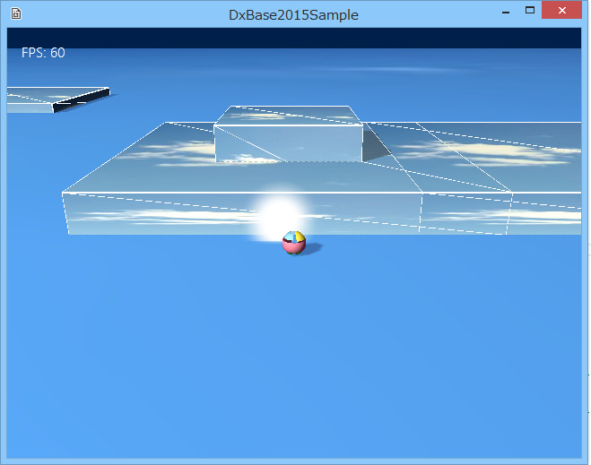
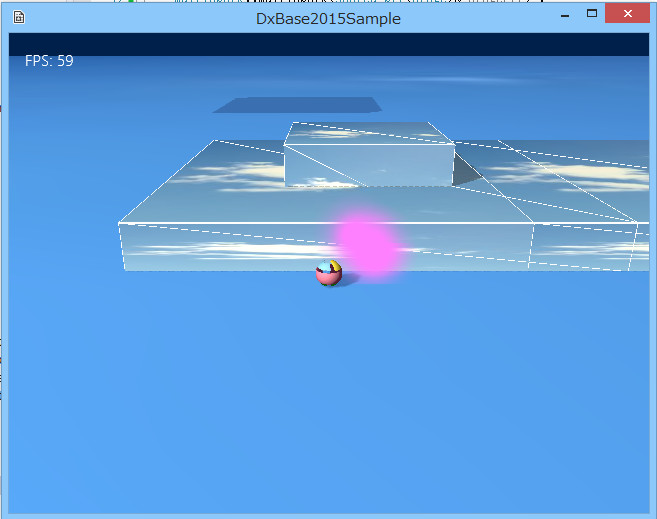

図3002a
このスパークを実装しているのは、MultiSparkクラスです。Charactor.h、cppに記述があります。
void MultiSpark::InsertSpark(const Vector3& Pos){
auto ParticlePtr = InsertParticle(4);
ParticlePtr->SetEmitterPos(Pos);
ParticlePtr->SetTextureResource(L"SPARK_TX");
ParticlePtr->SetMaxTime(0.5f);
vector<ParticleSprite>& pSpriteVec = ParticlePtr->GetParticleSpriteVec();
for (auto& rParticleSprite : ParticlePtr->GetParticleSpriteVec()){
rParticleSprite.m_LocalPos.x = Util::RandZeroToOne() * 0.1f - 0.05f;
rParticleSprite.m_LocalPos.y = Util::RandZeroToOne() * 0.1f;
rParticleSprite.m_LocalPos.z = Util::RandZeroToOne() * 0.1f - 0.05f;
//各パーティクルの移動速度を指定
rParticleSprite.m_Velocity = Vector3(
rParticleSprite.m_LocalPos.x * 5.0f,
rParticleSprite.m_LocalPos.y * 5.0f,
rParticleSprite.m_LocalPos.z * 5.0f
);
//色の指定
rParticleSprite.m_Color = Color4(1.0f, 1.0f, 1.0f, 1.0f);
}
}
//色の指定
rParticleSprite.m_Color = Color4(1.0f, 1.0f, 1.0f, 1.0f);
//色の指定
rParticleSprite.m_Color = Color4(1.0f, 0.5f, 1.0f, 1.0f);

図3002b
のようになります。 ここではテクスチャそのものに色を付けてませんが、テクスチャに色を付けた場合、ここの指定色とテクスチャ色の合成された色になります。
void Player::Update2(){
auto ColPtr = GetComponent<Collision>();
if (ColPtr->GetHitObject()){
auto PtrSpark = GetStage()->GetSharedGameObject<MultiSpark>(L"MultiSpark", false);
if (PtrSpark){
PtrSpark->InsertSpark(GetComponent<Transform>()->GetPosition());
}
}
//中略
}
void MultiSpark::Update(){
//前回のターンからの時間
float ElapsedTime = App::GetApp()->GetElapsedTime();
for (auto ParticlePtr : GetParticleVec()){
//トータル時間に加算
ParticlePtr->AddTotalTime(ElapsedTime);
for (auto& rParticleSprite : ParticlePtr->GetParticleSpriteVec()){
if (rParticleSprite.m_Active){
//もしアクティブなら
//移動速度に従って移動させる
rParticleSprite.m_LocalPos += rParticleSprite.m_Velocity * ElapsedTime;
//色を変化させる(だんだん黒く、より透明になる)
rParticleSprite.m_Color *= 0.95f;
if (ParticlePtr->GetTotalTime() >= ParticlePtr->GetMaxTime()){
//制限時間になったら
rParticleSprite.m_Active = false;
}
}
}
}
}